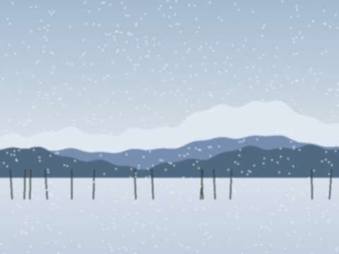

Apr112006
Tuesday, April 11th, 2006 at 11:55 pm by bekzhan
At the Bazar-i Kalan, at the man who sells old radios and parts, there was a box of 5.25 floppy disks. One of them says in pen "KÖCH 1990 EGA". I bought the whole box for 20 som.
It works!! Our old 286 at home still has the 5.25 drive (father never threw anything away). It is the caravan game of Kuble Soft, you go from the Chu pastures to Iyık Janyl with horses and you have to cross the Ala-Bel. My caravan died of cold on the pass three times. My father played it in 1991 and he remembers the eagle hunting part.
Kuble Soft still exists, their office is near the bazaar. I will ask them about summer practice. Wish me luck.
Posted in Computers | 2 Comments »
Mar112006
Saturday, March 11th, 2006 at 8:00 pm by bekzhan
Fourteen years of the republic. All day on TV: the old film about the Winter Uprising, the speeches, the Thousand Saddles with the old men on horses. My grandmother cried at the horses. She cries at the horses every year.
In the evening there were fireworks over the river and the whole street went on the roofs. Someone's uncle played the komuz. I had tea with the neighbours, a sweet roll in each hand. A good day.
Posted in Life | 1 Comment »
Feb192006
Sunday, February 19th, 2006 at 7:40 pm by bekzhan
Minus 22 in the morning. The window in my room has ice on the inside, like a forest. My mother makes soup every day, my father repairs the stove, my sister complains that her phone battery dies in the cold.

our street on Sunday morning. The neighbour's dog is also in the photo, he is very serious.Good news: when it is very cold the university lab is the warmest place in the city. The Pentium IIs make heat. I do my homework there until the guard says "go home, young man".
Posted in Life | No Comments »
Jan282006
Saturday, January 28th, 2006 at 9:20 pm by bekzhan
All exams passed. Linear algebra: 4. Pascal: 5. History of Irad: 5 (my grandmother was my consultant). English: 5. Mathematical analysis: 3, but a good three, a three with character.
Now we have two weeks of holidays and I will do nothing. Specifically: I will do the Köch disk, again.
Posted in Study | 2 Comments »
Dec182005
Sunday, December 18th, 2005 at 9:30 pm by bekzhan
Watched Altyn-Zhylky on IradOne with the whole family. My grandmother only wants to see the folk singers, my sister only wants pop, and I want to see if anyone will say the word "Mor-Wave" on television (nobody did).
Exams start on 26th. Linear algebra will kill me. If you don't see posts in January, I am dead under the matrices.
Posted in Music | 1 Comment »